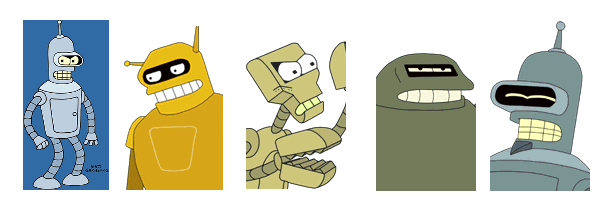

Yet Another Robot Platform

YARP. Because Robots Need Friends.
|
Download |
- | get the latest source code |
|
Official Documentation |
- | read online docs / pdf / zip / verbose |
|
Contributed Docs |
- | YARP Wiki, for all the latest topics |
|
People |
- | list of developers |
|
Distribution |
- | licensing, 3rd party software |
|
Mailing lists |
- | robotcub-hackers (archives) |
|
Report a bug |
- | Bug reports and Feature requests |
|
Partner project |
- | iCub humanoid software |
|
Related projects |
- | Player/Stage, Orocos, others |
|
Paper |
- | Towards Long-lived Robot Genes, Robotics and Autonomous Systems, 2007, in press |
|
Presentation |
- | Towards Long-lived Robot Software, Workshop on Humanoid Tech., 2006 |
|
The cathedral and the bazaar |
- | On Linux and Open Source |
|
Random nostalgia |
- | First YARP citation in press |